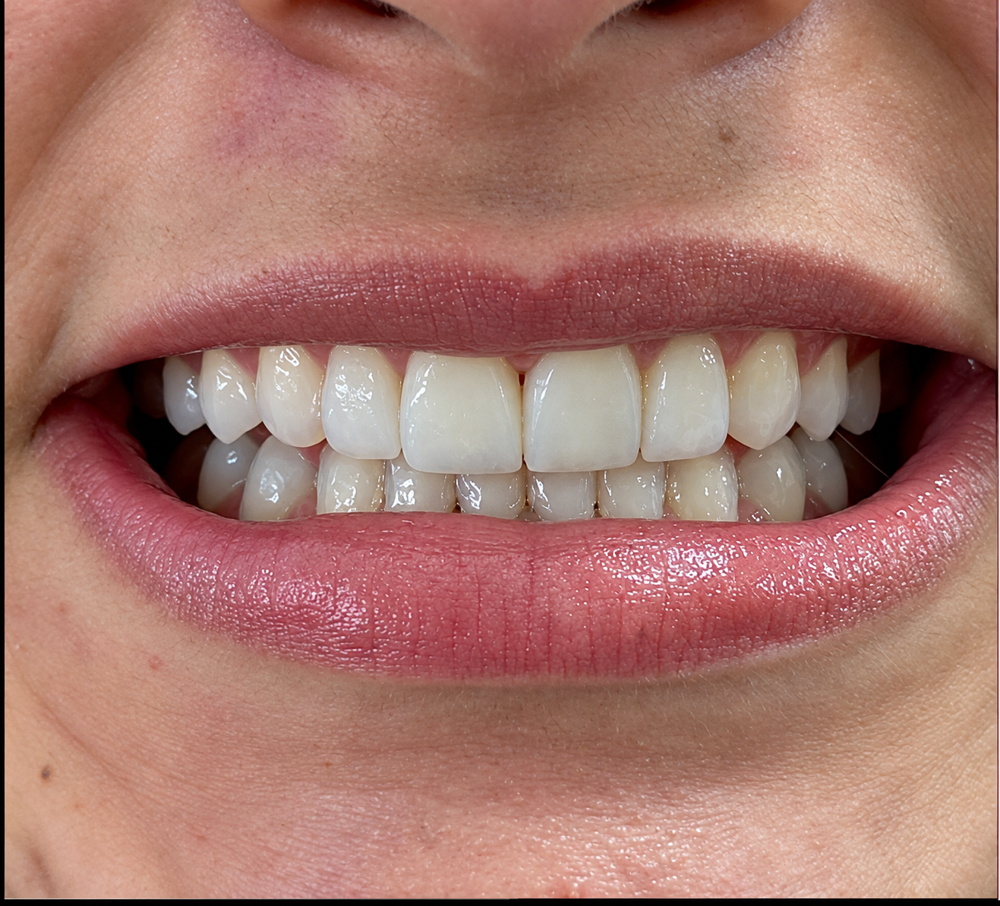
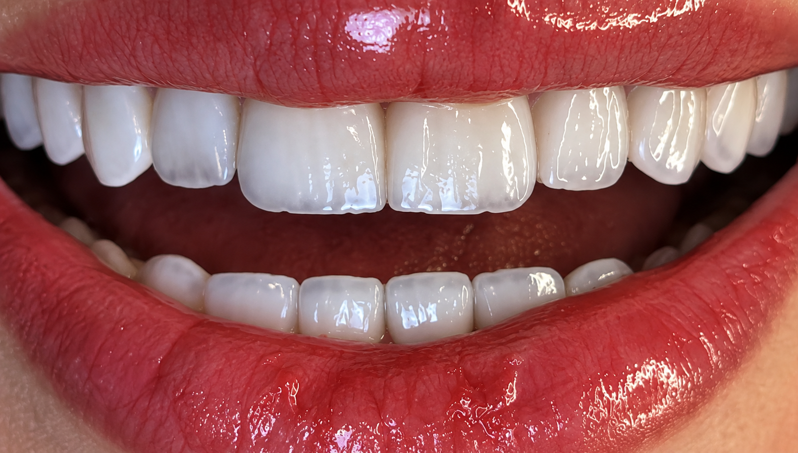
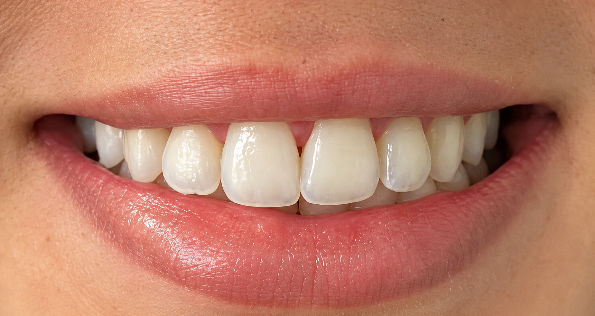
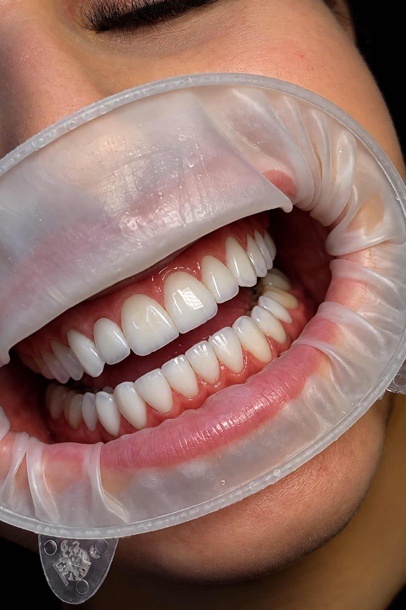
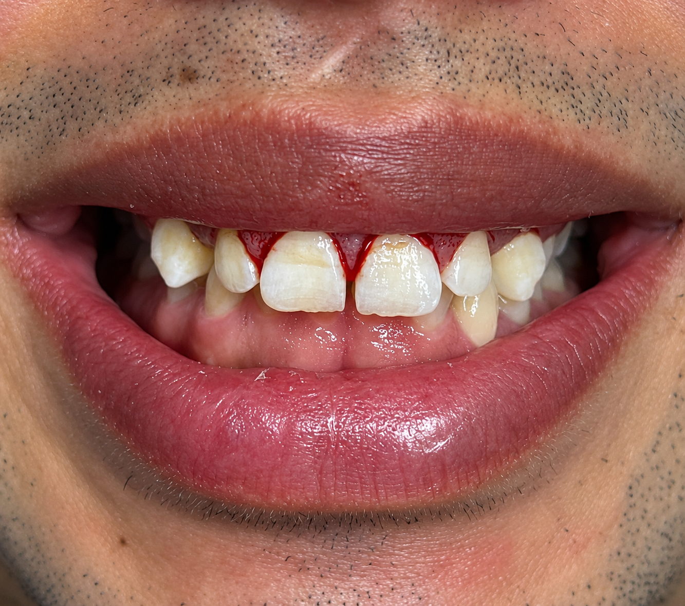
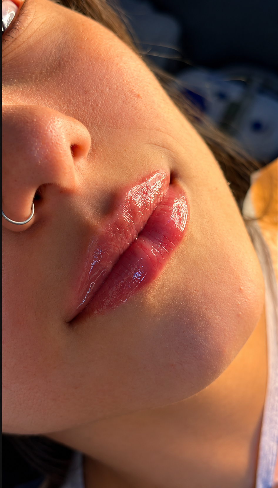
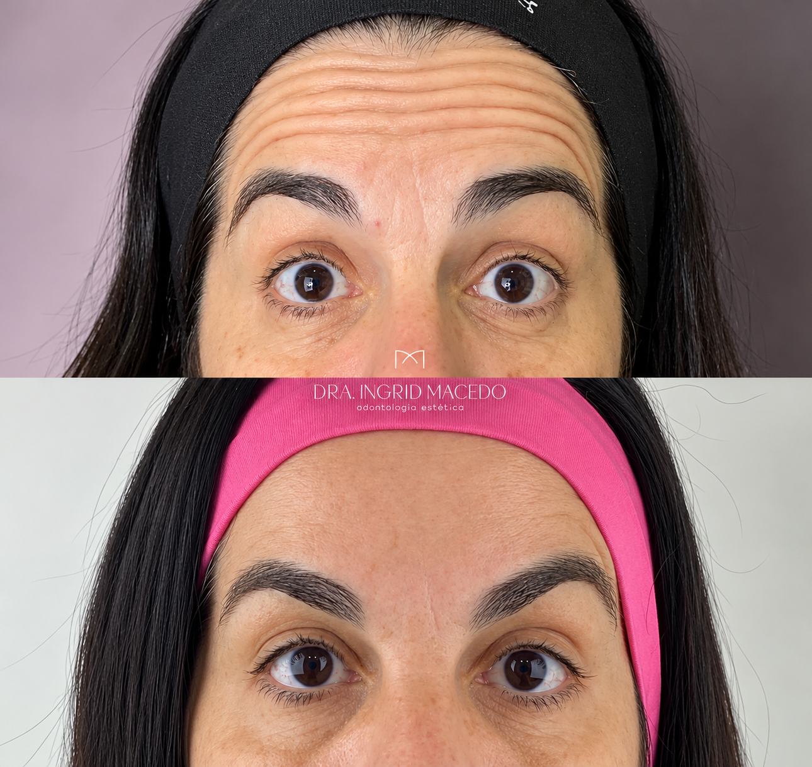

Tratamentos pensados para cada sorriso
Estética dental
Facetas em resina
Reanatomização do sorriso com resina, em geral numa única etapa e com mínimo desgaste.

Facetas em porcelana
Lâminas finas e duradouras para mudanças de forma, cor e alinhamento.

Clareamento
Dentes mais claros com segurança e acompanhamento. Trabalhamos com três modalidades:
- CaseiroMoldeira feita sob medida para o paciente, usada em casa todos os dias.
- De consultórioRealizado 100% no consultório, em 3 sessões.
- Misto1 sessão no consultório e continuidade em casa.

Modo de uso: clareamento caseiro
Recontorno Estético com Resina
Técnica que utiliza resina composta para ajustar pequenos detalhes de formato, proporção e contorno dos dentes, valorizando a harmonia e a naturalidade do sorriso.

Periodontia
Saúde gengival
Avaliação e cuidado das gengivas, a base de qualquer resultado estético.

Gengivoplastia
Procedimento periodontal que remodela o contorno da gengiva, proporcionando maior harmonia entre dentes e gengiva e valorizando a estética do sorriso.

Tratamentos periodontais
Controle e tratamento de inflamações e perda de suporte dos dentes.

Harmonização facial
Preenchimento labial
Volume e contorno discretos, em harmonia com o sorriso.

Botox
Suaviza linhas de expressão preservando a naturalidade.

Procedimentos faciais
Indicados após avaliação individual do rosto.